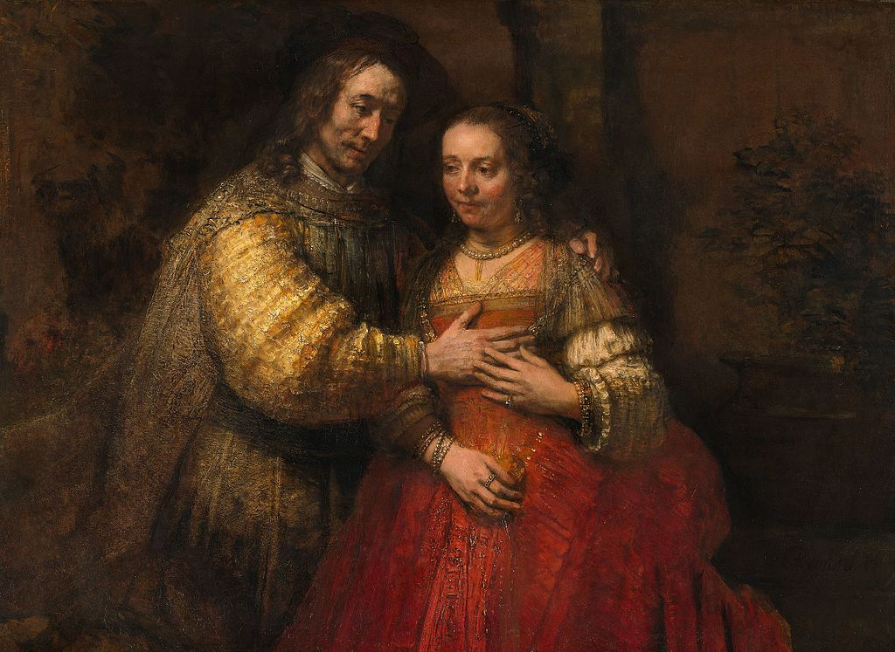

<head>
<meta charset="UTF-8" />
<meta name="keywords" content="drawing, painting" />
<meta name="description" content="drawings by Sunjy" />
<title>Sunjy</title>
<link rel="shortcut icon" type="image/x-icon" href="../../mImages/mCommon/favicon.ico" media="screen" />
<link rel="stylesheet" type="text/css" href="../../mCsses/mCommon/mCssA.css" />
<link rel="stylesheet" type="text/css" href="../../mCsses/mCommon/mCssB.css" />
<link rel="stylesheet" type="text/css" href="../../mCsses/mCommon/mCssC.css" />
<link rel="stylesheet" type="text/css" href="../../mCsses/mCommon/mCssD.css" />
<link rel="stylesheet" type="text/css" href="../../mCsses/mContent/mCssA.css" />
<link rel="stylesheet" type="text/css" href="../../mCsses/mContent/mCssB.css" />
<link rel="stylesheet" type="text/css" href="../../mCsses/mContent/mCssC.css" />
<link rel="stylesheet" type="text/css" href="../../mCsses/mContent/mCssD.css" />
</head>
<script type="text/javascript" src="../../mScripts/mContent/mContentAA.js" /></script>
<script type="text/javascript" src="../../mScripts/mContent/mContentAB.js" /></script>
<script type="text/javascript" src="../../mScripts/mContent/mContentAC.js" /></script>
<script type="text/javascript" src="../../mScripts/mContent/mContentAD.js" /></script>
<script type="text/javascript"></script> 
<script type="text/javascript">
document.write('<div class="mImgAbsolute"></div>');
/*
document.write('<p class="mFontSizeBColor" />From a white paper...</p>');
document.write('<table class="center"><tr><td>');
document.write('');
document.write('</td></tr></table>');
*/
</script>


<script type="text/javascript">
document.write('<p class="mFontSizeBColor" />The Jewish Bride</p>');
document.write('<p class="mFontSizeSColor" />“The Jewish Bride” by Rembrandt, gained its name in the early 19th century when an Amsterdam art collector identified the couple as that of a Jewish father bestowing a necklace upon his daughter on her wedding day.  <br><br>This interpretation is no longer accepted, and the identity of the couple is uncertain.<br><br>The likeliest depiction is that of Isaac and Rebecca, as described in Genesis 26:8, and this view is supported by a Rembrandt drawing of Isaac and Rebecca, with the same theme which shows the couple in a similar composition.<br><br>The painting was commissioned as a portrait of a couple in the guise of a biblical pair such as Isaac and Rebecca. It is a brilliant color creation.<br><br>The composition is an enduring expression of tenderness and love. The couple’s embrace is at the center of this poignant painting.<br><br>The man’s loving gesture is returned with a gentle caress. The couple shows all the signs of tenderness towards each other, so this is not a typical seduction scene, which was a favorite at the time.<br><br>This painting shows Rembrandt’s genius for expressing human emotion and is one of the great portrait paintings of the last period of his career.<br><br>Vincent van Gogh said of this painting:<br><br>“I should be happy to give ten years of my life, if I could go on sitting here in front of this picture for a fortnight, with only a crust of dry bread for food.”<br></p>');
document.write('<table class="center" /><tr><td>');
document.write('<br>This interpretation is no longer accepted, and the identity of the couple is uncertain.<br><br>The likeliest depiction is that of Isaac and Rebecca, as described in Genesis 26:8, and this view is supported by a Rembrandt drawing of Isaac and Rebecca, with the same theme which shows the couple in a similar composition.<br><br>The painting was commissioned as a portrait of a couple in the guise of a biblical pair such as Isaac and Rebecca. It is a brilliant color creation.<br><br>The composition is an enduring expression of tenderness and love. The couple’s embrace is at the center of this poignant painting.<br><br>The man’s loving gesture is returned with a gentle caress. The couple shows all the signs of tenderness towards each other, so this is not a typical seduction scene, which was a favorite at the time.<br><br>This painting shows Rembrandt’s genius for expressing human emotion and is one of the great portrait paintings of the last period of his career.<br><br>Vincent van Gogh said of this painting:<br><br>“I should be happy to give ten years of my life, if I could go on sitting here in front of this picture for a fortnight, with only a crust of dry bread for food.”<br>" />');
document.write('</td></tr></table>');
</script>


